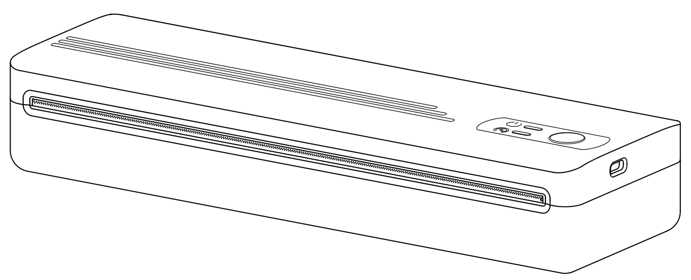
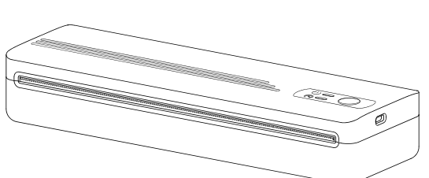
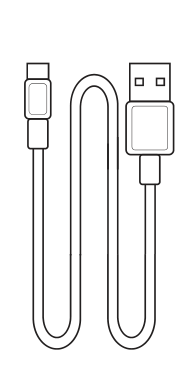
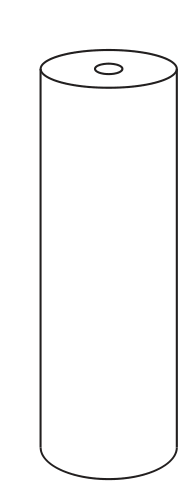
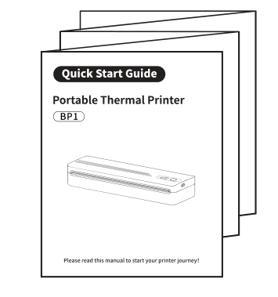
| Печать | Прямая термопечать, 203 dpi, без картриджей |
| Ширина печати | До 210 мм (A4) |
| Скорость | До 21,5 мм/с |
| Бумага | Термобумага: рулон до 30 мм или фальцованная |
| Ширина бумаги | 53–216 мм: Letter, A4, B5, A5, 110, 80, 53 мм |
| Подключение | USB Type-C, Bluetooth |
| Аккумулятор | 7,4 В, 1500 мА·ч, заряд около 1 ч 50 мин |
| Размеры, вес | 257 × 80 × 46 мм, 643 г |
| Системы | Android, iOS, Windows, macOS, Linux, ChromeOS |
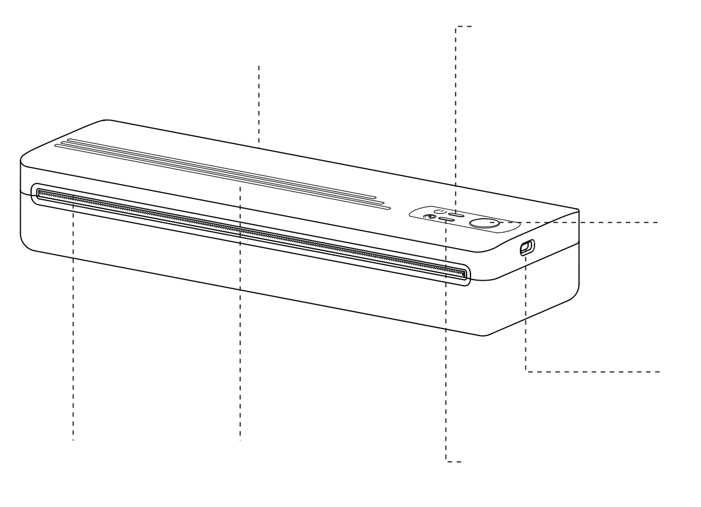
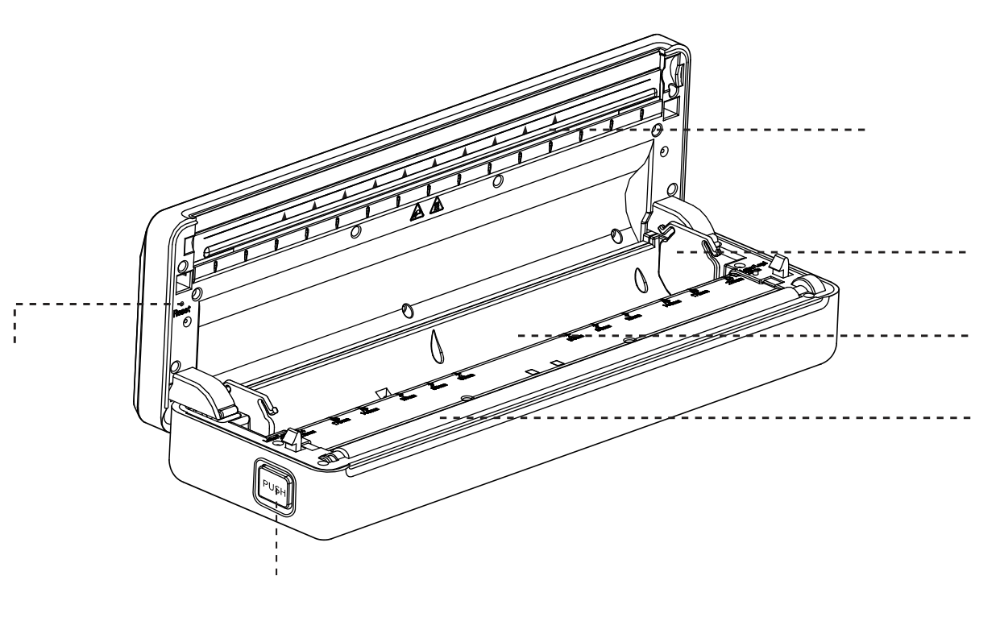
| Удержание 1 с | Включить или выключить |
| Двойное нажатие | Напечатать тестовую страницу |
| Синий горит | Готов к работе, аккумулятор заряжен |
| Синий мигает | Заряжается (принтер выключен) |
| Красный горит | Нет бумаги или открыта крышка |
| Красный мигает | Перегрев или низкий заряд |
| Зелёный горит | Подключён по Bluetooth |
| Синий горит | Подключён по USB |
Принтер завис — нажмите тонким предметом в отверстие сброса (5 на стр. 2).
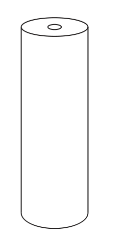
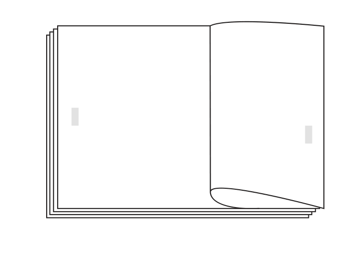
Только термобумага — картриджи и краска не нужны.
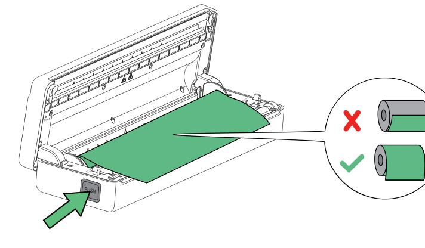
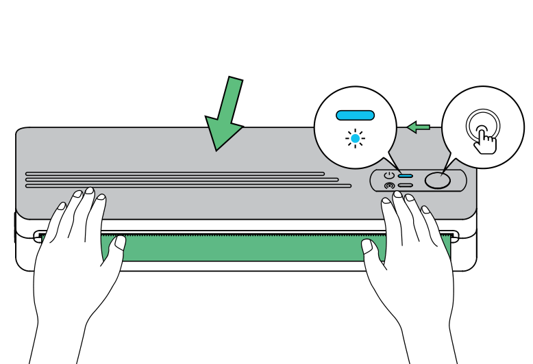
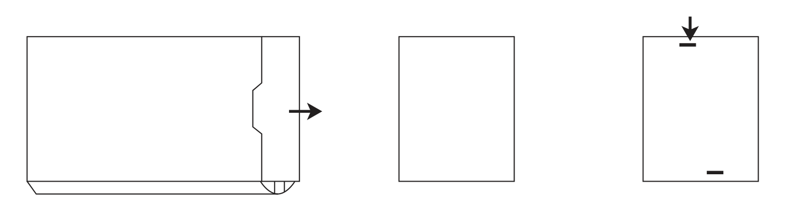
чёрная метка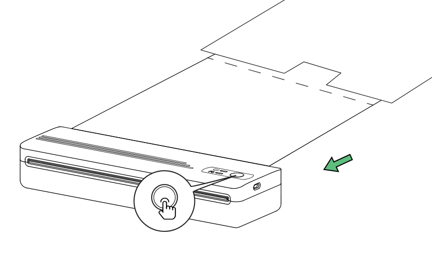
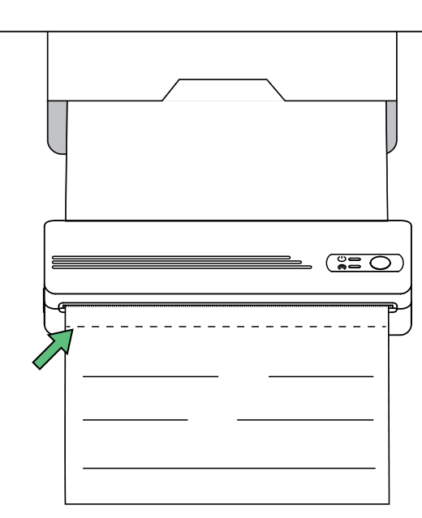
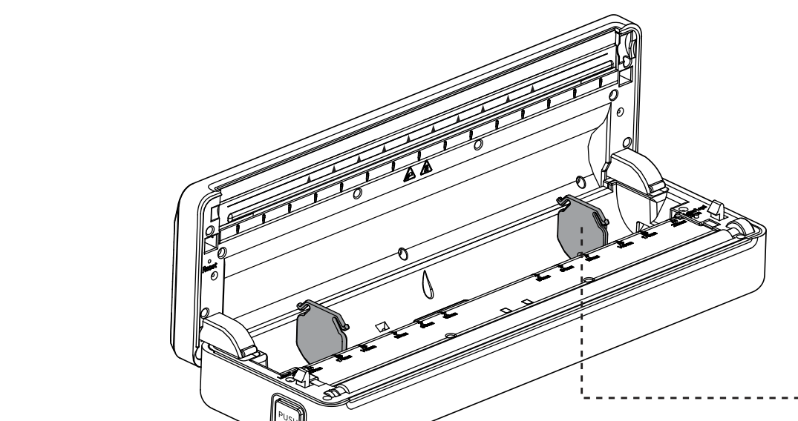
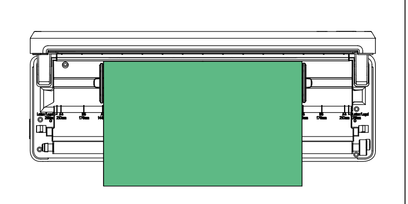
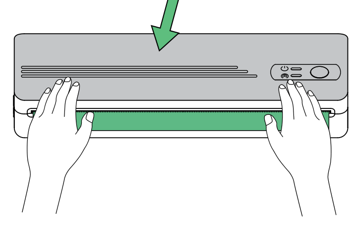
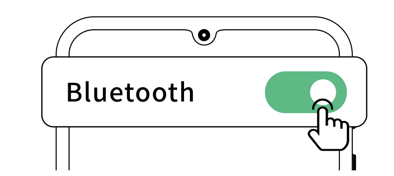
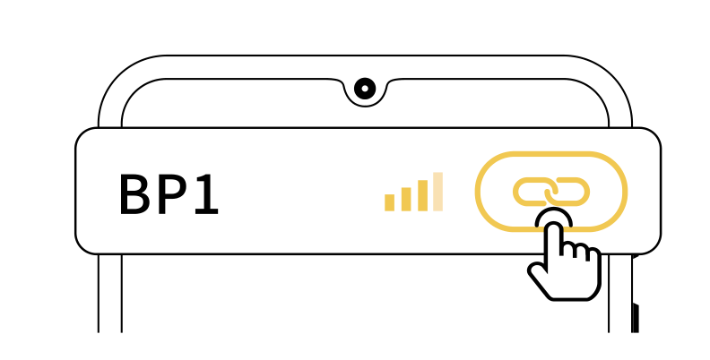
Драйверы для Windows, macOS, Linux и ChromeOS — на странице 4barcode.ru/a4
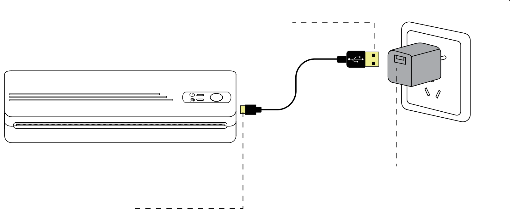
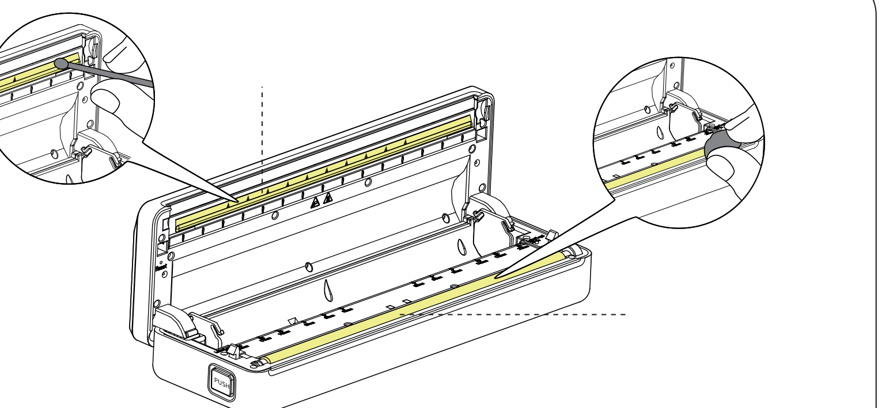
Производитель: Джухай Глобал Технолоджи ко. ЛТД
ZHUHAI GLOBAL TECHNOLOGY CO., LTD
Китай, провинция Гуандун, г. Чжухай, район Сянгжоу, Цианьшан промышленный парк, Хуавей шоссе, 613, строение 1, блок 5F, С
Гарантийный срок — 12 мес. · Сделано в Китае